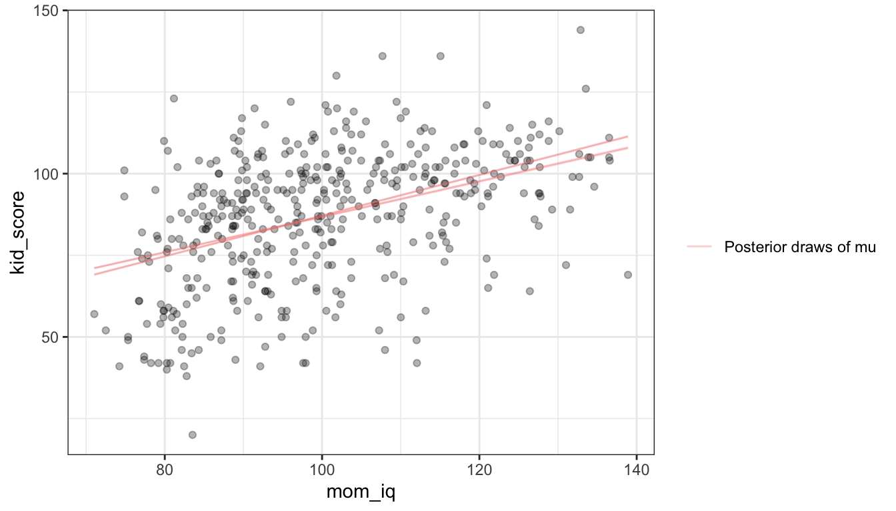

Bayesian Data Analysis
Bayesian Linear Regression with JAGS
Data: Cognitive Test Scores
Data are available on the cognitive test scores of three- and four-year-old children in the USA.
The sample contains 434 observations
Information also provided about his/her mother’s IQ and whether or not the mother graduated from highschool.
Simple Linear Regression Model
We will assume a normal model for the data such that
\(y_i|\mu,\sigma^2 \sim N(\mu_i, \sigma^2)\)
- Let’s start simple and consider the expected value for \(y_i\) as a function of one explanatory variable (mother’s IQ) such that:
\(\mu_i = \alpha + \beta x_i\)
- This could also be specified as:
\(y_i = \mu_i + \epsilon_i\)
\(\epsilon_i \sim N(0, \sigma^2)\)
- To give the intercept more meaning we could mean center the predictor:
\(\mu_i = \alpha + \beta (x_i - \bar{x})\)
- \(\alpha\) is now the expected value of \(y\) at the average \(x\).
Prior Choice
We will need to specify priors for \(\alpha\), \(\beta\) and \(\sigma\).
- Before seeing the data would could assume that the value of the intercept (\(\alpha\)) is unlikely to be to beyond the range of possible IQ values (1, 200). So let’s assume an expected value of 100 and a standard deviation of 30.
\(\alpha \sim N(100,30^2)\)
Prior Choice
We will need to specify priors for \(\alpha\), \(\beta\) and \(\sigma\).
- For the slope (\(\beta\)), before seeing the data I have no idea about whether the mother’s IQ affects the kid’s IQ, so it is reasonable to consider a value of 0 for the slope. Realistically I think we are unlikely to see the value of the slope going anywhere beyond the range (-4,4), so let’s assume a standard deviation for the slope of 2.
\(\beta \sim N(0,2^2)\)

Prior Choice
For \(\sigma\) we can consider some uninformative or weakly informative priors commonly used for variance parameters:
- Gamma prior \(gamma(\epsilon, \epsilon)\) on the precision (\(\tau = \frac{1}{\sigma^2}\))
\(\tau \sim Ga(0.1,0.1)\)
- Uniform prior on the standard deviation
\(\sigma \sim U(0,50)\)
- Cauchy (half-t) prior on the standard deviation
\(\sigma \sim ht(30,10^2,1)\)
For more information see this paper by Andrew Gelman.
JAGS model specification
- Model specification (likelihood and priors):
Data Model (likelihood) \[\begin{align*} y_i|\mu_i, \sigma &\sim Normal(\mu_i, \sigma) \\ \mu_i &= \alpha + \beta*(x_i - \bar{x})\\ \end{align*}\]
Priors \[\begin{align*} \alpha &\sim Normal(100, 30^2)\\ \beta &\sim Normal(0, 2^2)\\ \sigma &\sim Uniform(0,50)\\ \end{align*}\]
Model Fitting
library(rjags)
library(R2jags)
jags.data1 <- list(y.i = kidiq$kid_score,
x.i = kidiq$mom_iq,
n = nrow(kidiq))
parnames1 <- c("alpha","beta","sigma","mu.i")
mod1 <- jags(data = jags.data1,
parameters.to.save=parnames1,
model.file = textConnection(lrmodel1),
n.iter = 4000,
n.burnin = 2000)Compiling model graph
Resolving undeclared variables
Allocating nodes
Graph information:
Observed stochastic nodes: 434
Unobserved stochastic nodes: 3
Total graph size: 1879
Initializing modelOutput - Parameter Uncertainty
library(tidybayes)
mcmc.matrix1 <- mod1$BUGSoutput$sims.matrix
par_samps1 <- mcmc.matrix1 %>% spread_draws(alpha,beta,sigma)
par_samps1# A tibble: 3,000 × 6
.chain .iteration .draw alpha beta sigma
<int> <int> <int> <dbl> <dbl> <dbl>
1 1 1 1 86.6 0.649 17.3
2 1 2 2 86.4 0.622 17.8
3 1 3 3 86.4 0.687 18.0
4 1 4 4 86.8 0.612 18.2
5 1 5 5 86.7 0.591 18.0
6 1 6 6 85.0 0.673 18.1
7 1 7 7 86.2 0.641 18.1
8 1 8 8 85.9 0.653 19.0
9 1 9 9 86.1 0.647 18.2
10 1 10 10 87.8 0.471 18.0
# ℹ 2,990 more rowspar_summary1 <- mcmc.matrix1 %>%
gather_rvars(alpha,beta,sigma) %>%
median_qi(.value, .width = c(.95,0.9))
par_summary1# A tibble: 6 × 7
.variable .value .lower .upper .width .point .interval
<chr> <dbl> <dbl> <dbl> <dbl> <chr> <chr>
1 alpha 86.8 85.1 88.6 0.95 median qi
2 beta 0.609 0.498 0.722 0.95 median qi
3 sigma 18.3 17.2 19.7 0.95 median qi
4 alpha 86.8 85.4 88.3 0.9 median qi
5 beta 0.609 0.515 0.706 0.9 median qi
6 sigma 18.3 17.3 19.4 0.9 median qi Output - parameter Uncertainty

Posterior Draws of \(\mu_i\)
For each sample draw (simulation) \(s= 1, \ldots , S\) of the parameters from the posterior distribution we can obtain \(\mu_i^{(s)} = \beta_0^{(s)} + \beta_1^{(s)}(x_{i} - \bar{x})\)
# A tibble: 1,302,000 × 5
# Groups: mu_ind [434]
mu_ind mu.i .chain .iteration .draw
<int> <dbl> <int> <int> <int>
1 1 100. 1 1 1
2 1 99.5 1 2 2
3 1 101. 1 3 3
4 1 99.8 1 4 4
5 1 99.2 1 5 5
6 1 99.2 1 6 6
7 1 99.7 1 7 7
8 1 99.7 1 8 8
9 1 99.8 1 9 9
10 1 97.8 1 10 10
# ℹ 1,301,990 more rows5 posterior draws

Posterior Draws of \(\mu_i\)
For each draw (simulation) \(s= 1, \ldots , S\) of the parameters from the posterior distribution we can obtain \(\mu_i^{(s)} = \beta_0^{(s)} + \beta_1^{(s)}(x_{i} - \bar{x})\)
# A tibble: 1,302,000 × 5
# Groups: mu_ind [434]
mu_ind mu.i .chain .iteration .draw
<int> <dbl> <int> <int> <int>
1 1 100. 1 1 1
2 1 99.5 1 2 2
3 1 101. 1 3 3
4 1 99.8 1 4 4
5 1 99.2 1 5 5
6 1 99.2 1 6 6
7 1 99.7 1 7 7
8 1 99.7 1 8 8
9 1 99.8 1 9 9
10 1 97.8 1 10 10
# ℹ 1,301,990 more rows200 posterior draws

Summary for \(\mu_i\) - Point Estimate + Credible Interval
mu_ind <- 1:nrow(kidiq)
mu_samps1 <- mcmc.matrix1 %>% spread_draws(mu.i[mu_ind])
mu_summary1 <- mu_samps1 %>%
median_qi(.width = 0.95)
mu_summary1# A tibble: 434 × 7
mu_ind mu.i .lower .upper .width .point .interval
<int> <dbl> <dbl> <dbl> <dbl> <chr> <chr>
1 1 99.7 96.8 103. 0.95 median qi
2 2 80.3 78.2 82.4 0.95 median qi
3 3 96.3 93.8 98.7 0.95 median qi
4 4 86.5 84.8 88.2 0.95 median qi
5 5 82.4 80.5 84.3 0.95 median qi
6 6 91.6 89.7 93.6 0.95 median qi
7 7 111. 106. 115. 0.95 median qi
8 8 102. 98.8 105. 0.95 median qi
9 9 75.6 72.9 78.3 0.95 median qi
10 10 83.8 82.0 85.6 0.95 median qi
# ℹ 424 more rowskidiq <- kidiq %>% mutate(mu.i = mu_summary1$mu.i,
lower = mu_summary1$.lower,
upper = mu_summary1$.upper)
ggplot(kidiq, aes(x = mom_iq, y = kid_score)) +
geom_point() +
geom_line(aes(x = mom_iq, y = mu.i),colour = "blue") +
geom_ribbon(aes(ymin = lower, ymax = upper, fill = "CI"), alpha = 0.3) +
theme_bw() +
labs(fill = "") +
ylab("Kid's IQ") +
xlab("Mother's IQ")Predictive Distribution
The posterior predictive distribution is the distribution of possible unobserved values conditional on the observed values.

Bayesian Credible intervals
Bayesian Credible Interval
A Bayesian credible interval represents the range within which a parameter value (such as a mean, a proportion, or a regression coefficient) is expected to fall with a specified probability, given the observed data.
Interpretation: If we calculate a 95% credible interval for a parameter, we can interpret this as having a 95% probability that the parameter lies within that interval, conditional on the observed data and the chosen prior.
Usage: Bayesian credible intervals are particularly used to estimate the uncertainty of unknown model parameters (e.g., the mean of a distribution, a regression coefficient).
For example, if we calculate a 95% credible interval for a mean \(\mu\) Kid IQ given the Mothers IQ is 120, it means there’s a 95% probability that \(mu\) is within this interval, given the observed data and the prior belief about \(\mu\).
Bayesian Prediction Intervals
Prediction Interval
A prediction interval represents the range within which a future, single observation is expected to fall, given the current model and data.
Interpretation: A 95% prediction interval indicates that there is a 95% probability that a new, future observation will lie within this interval, taking into account both the uncertainty about the parameter estimates and the natural variability in future data points.
Usage: Prediction intervals are often used to estimate the range in which future values of a variable are likely to fall, such as forecasting sales figures, temperatures, or test scores.
For example, if we have a 95% prediction interval for a future observation \(y\) in a Bayesian setting, it means there is a 95% probability that a new data point, drawn under the same conditions, will lie within this interval.
Key Differences Between Bayesian Credible Intervals and Prediction Intervals
| Aspect | Bayesian Credible Interval | Prediction Interval |
|---|---|---|
| Purpose | To estimate the range of a parameter with specified credibility | To predict the range of a future observation |
| Focus | The value of the parameter, given observed data | A single future observation, given the model and data |
| Variability Source | Only parameter uncertainty, conditioned on data and prior beliefs | Both parameter uncertainty and data variability |
| Interpretation | Probability of the parameter being within the interval | Probability of a future observation being within the interval |
| Application | Parameter estimation in Bayesian inference | Forecasting or prediction for future observations |
Add a predictive distribution to JAGS
For a single \(x_{pred} = 120\)
lrmodel1 ="
model{
....
## predictive distribution
mu_pred <- alpha + beta*(120 - mean(x.i))
ytilde ~ dnorm(mu_pred, sigma^-2)
}
"For multiple \(x_{pred} = 120,130,140,150\)
lrmodel1 ="
model{
....
## predictive distribution
for(j in 1:N_pred)
{
mu_pred[j] <- alpha + beta*(x_pred[j] - mean(x.i))
ytilde[j] ~ dnorm(mu_pred[j], sigma^-2)
}
}
"Credible vs prediction interval for kidiq example
Let’s consider the difference between the credible interval and the prediction interval for the Kid’s IQ when the Mother’s IQ = 120.
par_samps1 <- mcmc.matrix1 %>% spread_draws(mu_pred,ytilde)
par_samps1# A tibble: 3,000 × 5
.chain .iteration .draw mu_pred ytilde
<int> <int> <int> <dbl> <dbl>
1 1 1 1 98.5 112.
2 1 2 2 96.5 102.
3 1 3 3 99.3 117.
4 1 4 4 101. 79.3
5 1 5 5 99.6 118.
6 1 6 6 102. 131.
7 1 7 7 99.8 69.0
8 1 8 8 97.2 87.7
9 1 9 9 98.1 132.
10 1 10 10 101. 109.
# ℹ 2,990 more rowspar_summary1 <- mcmc.matrix1 %>%
gather_rvars(mu_pred,ytilde) %>%
median_qi(.value)
par_summary1# A tibble: 2 × 7
.variable .value .lower .upper .width .point .interval
<chr> <dbl> <dbl> <dbl> <dbl> <chr> <chr>
1 mu_pred 99.0 96.0 102. 0.95 median qi
2 ytilde 99.1 62.6 134. 0.95 median qi What do you notice about the width of the intervals?
Extending the regression model
Suppose now we want to see if there’s a “highschool” effect on the relationship between Mother’s IQ and Kid’s IQ.
Some possible choices:
Model 2A: Add the highschool variable as a grouping variable, such that you have a varying intercepts model with \(\alpha_1\) for
highschool = noand \(\alpha_2\) forhighschool = yes.Model 2B: Add the highschool variable in as a grouping variable such that you have a varying intercepts and slopes model with \(\alpha_1\) and \(\beta_1\) for
highschool = noand \(\alpha_2\) and \(\beta_2\) forhighscool = yes.
Let’s consider model 2B. The specification of this model could be written as
\(y_i|\mu,\sigma^2 \sim N(\mu_i, \sigma^2)\)
\(\mu_i = \underset{\text{j[i] = HS for obs i}}{\alpha_{j[i]} + \beta_{j[i]}}(x_{i} - \bar{x})\)
\(\alpha_j \sim N(100,30^2), \hspace{0.5em} \text{for } j=1,2\)
\(\beta_j \sim N(0,2^2), \hspace{0.5em} \text{for } j=1,2\)
JAGS model specification
\(y_i|\mu,\sigma^2 \sim N(\mu_i, \sigma^2)\)
\(\mu_i = \underset{\text{j[i] = HS for obs i}}{\alpha_{j[i]} + \beta_{j[i]}}(x_{i} - \bar{x})\)
\(\alpha_j \sim N(100,30^2), \hspace{0.5em} \text{for } j=1,2\)
\(\beta_j \sim N(0,2^2), \hspace{0.5em} \text{for } j=1,2\)
\(\sigma \sim U(0,50)\)
Model Fitting
library(rjags)
library(R2jags)
jags.data2 <- list(y.i = kidiq$kid_score,
x.i = kidiq$mom_iq,
hs_index = as.numeric(kidiq$mom_hs + 1),
n = nrow(kidiq),
m = 2)
parnames2 <- c("alpha.j","beta.j","sigma","mu.i")
mod2 <- jags(data = jags.data2,
parameters.to.save=parnames2,
model.file = textConnection(lrmodel2),
n.iter = 4000,
n.burnin = 2000)Compiling model graph
Resolving undeclared variables
Allocating nodes
Graph information:
Observed stochastic nodes: 434
Unobserved stochastic nodes: 5
Total graph size: 2376
Initializing modelOutput
mcmc.matrix2 <- mod2$BUGSoutput$sims.matrix
par_summary2 <- mcmc.matrix2 %>%
gather_rvars(alpha.j[1:2],beta.j[1:2]) %>%
median_qi(.value)
par_summary2# A tibble: 4 × 8
`1:2` .variable .value .lower .upper .width .point .interval
<int> <chr> <dbl> <dbl> <dbl> <dbl> <chr> <chr>
1 1 alpha.j 85.4 81.1 89.7 0.95 median qi
2 2 alpha.j 88.3 86.3 90.3 0.95 median qi
3 1 beta.j 0.963 0.677 1.26 0.95 median qi
4 2 beta.j 0.486 0.355 0.612 0.95 median qi mu_ind <- 1:nrow(kidiq)
mu_samps2 <- mcmc.matrix2 %>% spread_draws(mu.i[mu_ind])
mu_summary2 <- mu_samps2 %>%
median_qi(.width = 0.95)
mu_summary2# A tibble: 434 × 7
mu_ind mu.i .lower .upper .width .point .interval
<int> <dbl> <dbl> <dbl> <dbl> <chr> <chr>
1 1 98.5 95.4 102. 0.95 median qi
2 2 83.1 80.5 85.7 0.95 median qi
3 3 95.8 93.2 98.3 0.95 median qi
4 4 88.0 86.0 90.1 0.95 median qi
5 5 84.8 82.4 87.1 0.95 median qi
6 6 93.0 87.2 99.0 0.95 median qi
7 7 107. 102. 112. 0.95 median qi
8 8 100. 96.9 104. 0.95 median qi
9 9 79.3 76.1 82.6 0.95 median qi
10 10 85.9 83.7 88.1 0.95 median qi
# ℹ 424 more rowsVisualising the results
kidiq <- kidiq %>% mutate(mu.i = mu_summary2$mu.i,
lower = mu_summary2$.lower,
upper = mu_summary2$.upper,
mom_hs = factor(mom_hs,
labels = c("no", "yes")))
ggplot(kidiq, aes(x = mom_iq, y = kid_score, colour = mom_hs)) +
geom_point(alpha = 0.3) +
geom_line(aes(x = mom_iq, y = mu.i)) +
geom_ribbon(aes(ymin = lower, ymax = upper), alpha = 0.2) +
theme_bw() +
labs(colour = "Highschool") +
ylab("Kid's IQ") +
xlab("Mother's IQ")
Which model do we choose?
Firstly, let’s have a look at the residuals for each model
Which model do we choose?
Let’s also consider the observed values vs the model-based estimates.

Model information criteria
You might have come across these before: Akaike Information Criterion (AIC), Bayesian Information Criterion (BIC)
The general idea is that the score on the likelihood is a good measure of model fit, except for the fact that more complex models will generally have higher likelihood scores
If we penalise these scores by some measure of the complexity of the model then we can compare models across complexities
The usual measure of complexity is some function of the number of parameters
Because these are relative model comparisons, the best model according to an IC might still be useless.
Model information criteria
To calculate an IC, the likelihood score gets transformed into the deviance (remember JAGS monitors the “deviance” parameter), which is minus twice the log-likelihood score and then add a model complexity term is added.
- The two most common ICs are:
AIC : -2 log \(\hat{L}\) + 2p
BIC : -2 log \(\hat{L}\) + p log(n)
where p is the number of parameters and n is the number of observations
- Smaller values indicate the preferred model.
Model information criteria
For Bayesian models it’s hard to know which value of L to use, seeing as at each iteration we get a different likelihood score. Two specific versions of IC have been developed.
- The first, called the Deviance Information Criteria (DIC) is calculated via:
DIC: -2 log \(p(y|\hat{\theta}) + 2 p_D\)
where \(p_D\) = 2(log \(p(y|\hat{\theta})\) \(- E_{post}\)log \(p(y|\theta))\) is the effective number of parameters
- The second called the Widely Applicable Information Criterion (WAIC) which is calculated as:
WAIC: -2 log \(p(y|{\hat\theta}) + 2 p_{WAIC}\)
Here \(p_{WAIC}\) - the effective number of parameters - is a measure of the variability of the likelihood scores
Which IC to use?
WAIC and DIC are built for Bayesian hierarchical models
DIC is included by default in the R2jags package
WAIC is included in the loo package which is installed alongside Stan
WAIC is considered superior as it also provides uncertainties on the values. Most of the others just give a single value
Obtaining DIC and WAIC from JAGS
- DIC is easy to obtain from JAGS
DIC.m1 = mod1$BUGSoutput$DIC
DIC.m1[1] 3757.213DIC.m2 = mod2$BUGSoutput$DIC
DIC.m2[1] 3745.4- WAIC takes a little bit more work but there’s some code here that illustrates how to do it.
waic1 p_waic1
3757.1 2.9 waic2 p_waic2
3745.0 4.9 Cross Validation
Cross Validation (CV) is a method for assessing model performance by evaluating how well it generalizes to new, unseen data.
How Cross Validation Works:
- Partition the Data: Split the dataset into two parts: training and validation.
- Train the Model: Fit the model on the training subset.
- Predict on Validation Set: Use the trained model to predict values for the validation subset.
- Evaluate Performance: Compare predicted values with the actual values from the validation set to assess model accuracy.
Types of Cross Validation:
- K-Fold Cross Validation:
- Split the data into \(k\) equal-sized “folds.”
- Train the model \(k\) times, each time leaving out one fold as the validation set and training on the remaining \(k - 1\) folds.
- Average the performance across all folds for a more stable estimate.
- Leave-One-Out Cross Validation (LOO-CV):
- For small datasets, use LOO-CV, where each data point is left out one at a time as the validation set.
- This maximizes data usage for training, though it can be computationally intensive for large datasets.